USTC 多媒体技术 2026 · 小组期末展示
矩阵分解 ·
梯度融合 ·
医疗影像
本展示围绕三类互补的图像建模方法展开：RPCA 用于图像异常分离，Poisson 方程用于梯度域融合，nnMIL 用于计算病理学中的多实例诊断建模。
PB23061103 王雨乾
PB24261881 陈姝雅
PB24261888 乐慧璇
核心问题：在未知污染位置的情况下，从观测图像中恢复主体结构，并把遮挡、划痕、椒盐噪声等异常分离出来。
1.1 核心思想：A = L + S
一张规整的图像（渐变纹理、人脸轮廓）本质上是低秩矩阵 ；文字遮挡、划痕、椒盐噪声只影响少量像素，是稀疏矩阵 。观测到的污染图 A 可以分解为：
A = L + S
1.2 凸松弛与优化问题
直接最小化矩阵的秩和稀疏度是 NP-hard 问题。RPCA 采用凸松弛：
min ‖L‖* + λ‖S‖1 s.t. A = L + S* （核范数）= Σσi ，是秩的最紧凸下界1 = Σ|Sij |，是稀疏度的最紧凸下界
1.3 Inexact ALM 算法（手写实现）
参考 Lin, Chen & Ma (2010)，使用增广拉格朗日乘子法（ALM），交替更新 L 和 S：
1
SVT — 奇异值阈值（更新 L）
L ← SVT1/μ (A − S + Y/μ)τ (M) = U · diag(max(σ−τ, 0)) · Vᵀ
2
Shrink — 软阈值（更新 S）
S ← Shrinkλ/μ (A − L + Y/μ)ε (x) = sign(x) · max(|x|−ε, 0)
3
更新拉格朗日乘子 Y 和惩罚系数 μ
Y ← Y + μ(A − L − S)7
4
收敛判断
‖A − L − S‖F / ‖A‖F < 10−7 ，或达最大迭代次数 500
# 核心迭代（纯 numpy，仅 linalg.svd 调库）
while k < max_iter:
# Step 1: SVT for L
U, s, Vt = np.linalg.svd (A - S + Y/mu, full_matrices=False )
L = U @ np.diag (np.maximum (s - 1 /mu, 0 )) @ Vt
# Step 2: Shrink for S
T = A - L + Y/mu
S = np.sign (T) * np.maximum (np.abs (T) - lam/mu, 0 )
# Step 3: Dual update
residual = A - L - S
Y = Y + mu * residual
mu = min (rho*mu, mu_bar)
# Convergence check
if np.linalg.norm (residual, 'fro' ) / norm_A < tol: break 1.4 实验设计：2 底图 × 3 破坏方式 = 6 场景
设计完整实验网格，覆盖三种现实场景：文字遮挡、矩形缺块、椒盐噪声。点击标签切换查看各实验详情：
人像 · 文字遮挡
人像 · 矩形缺块
人像 · 椒盐噪声
纹理 · 文字遮挡
纹理 · 矩形缺块
纹理 · 椒盐噪声 ✦
文字遮挡是 RPCA 最擅长的场景——文字在矩阵中确实是稀疏的。Support F1=0.56 偏低是因为多个字符叠加在局部区域造成 dense clusters。恢复质量 PSNR 29.90 dB，视觉效果良好。
真值（原图）
矩形缺块是 RPCA 最弱的场景。 矩形缺块虽然"稀疏"，但过于规则——多个矩形块拼合后近似覆盖大面积区域，RPCA 将其误判为低秩成分的一部分。Support F1=0.077 极低，SSIM 仅 0.84，恢复质量明显下降。这揭示了 RPCA 对"稀疏性"假设在非随机遮挡场景下的局限。
真值（原图）
椒盐噪声在矩阵中的分布高度随机，与 RPCA 的稀疏假设完美契合，54.5 dB PSNR 几乎完美恢复。对比：Median(3×3) 仅 30.72 dB，RPCA 高出 +23.8 dB 。
合成纹理底图的真实秩=4，RPCA 恢复后秩仍为 4，精确还原。高 PSNR（43.5 dB）印证了理论预测：当 L 真实低秩且 S 随机稀疏时，凸松弛解与真解完全一致。
纹理底图上的矩形缺块表现比人像好得多（42.24 vs 19.72 dB）。合成纹理低秩性更强，RPCA 更容易区分低秩主体和矩形遮挡。
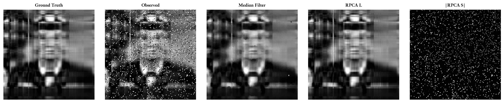
RPCA vs. 中值滤波对比
完美恢复案例。 合成纹理 rank=4，椒盐噪声完全随机稀疏，与 RPCA 理论假设高度吻合，PSNR→∞，像素级精确还原。RPCA 对比 Median(48.4 dB)：∞ vs 48.4 dB，SSIM 0.99999 vs 0.995。
1.5 全实验汇总表
场景 方法 PSNR↑ SSIM↑ Rel.Err↓ F1↑ λ 迭代 秩
人像·文字 RPCA 29.90 0.981 0.0844 0.560 0.0474 32 21 人像·矩形 RPCA 19.72 0.840 0.270 0.077 0.0237 29 7 人像·椒盐 RPCA 54.50 0.9995 0.00864 0.818 0.119 33 144 人像·椒盐 Median 3×3 30.72 0.940 0.0762 — — 1 — 纹理·文字 RPCA 43.48 0.9985 0.0111 0.621 0.0237 29 4 纹理·矩形 RPCA 42.24 0.9977 0.0128 0.591 0.0237 29 5 纹理·椒盐 RPCA ∞ ≈1.000 8.9e-7 ≈1.000 0.119 24 5 纹理·椒盐 Median 3×3 48.41 0.995 0.00626 — — 1 —
1.6 收敛曲线 & λ 敏感性分析
收敛曲线
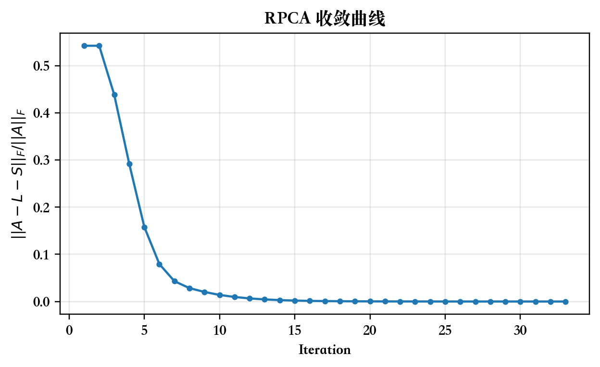
ALM 收敛曲线：残差 ‖A−L−S‖F /‖A‖F 随迭代次数的变化。20–35 次迭代内均达到 10−7 精度，展现了 ALM 的超线性收敛特性（μ 指数增长起关键作用）。
λ 敏感性分析
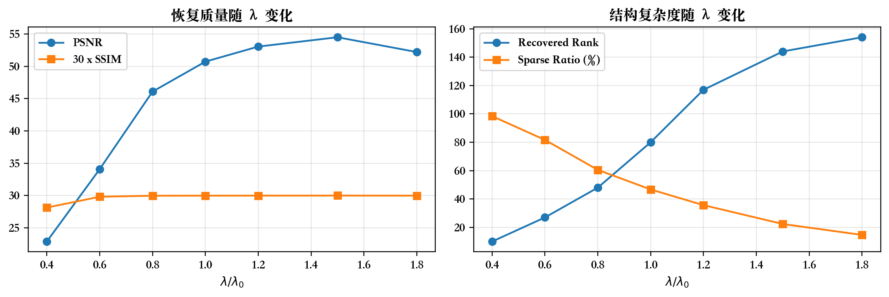
固定场景，扫描 λ ∈ [0.01, 0.5]。理论最优 λ* = 1/√max(m,n) 附近存在稳定区间；λ 过小导致 L 欠正则（秩爆炸），λ 过大导致 S 欠估计（漏掉噪声）。
1.7 总览网格图
总览图改为逐行展示，便于汇报时一张图对应一个结论。每行从输入、低秩恢复、稀疏异常到真值对照，突出 RPCA 对不同遮挡形态的分离能力。
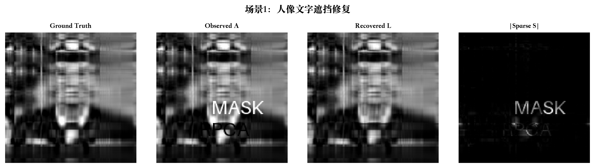
人像 + 文字遮挡：文字主要进入稀疏分量，低秩图像保留主体结构。
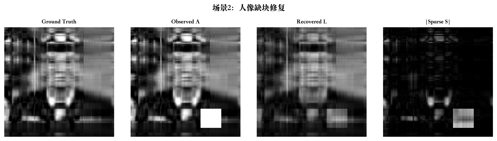
人像 + 块状遮挡：遮挡区域被分离到 S，L 恢复人脸连续纹理。
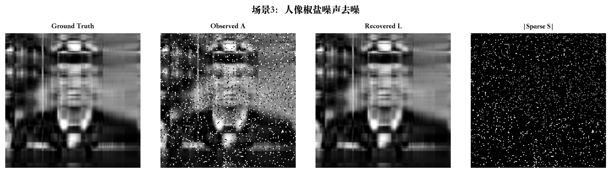
人像 + 椒盐噪声：随机噪声由稀疏项吸收，低秩项保持整体视觉质量。
纹理 + 文字遮挡：重复背景具有低秩性，文字异常可被稳定提取。
纹理 + 块状遮挡：大面积遮挡对恢复更困难，但主体周期结构仍可恢复。
纹理 + 椒盐噪声：随机稀疏噪声被清晰分离，说明模型对点状异常稳定。
1.8 进阶低秩模型验证：RSLRT 与 TILT
RSLRT — 秩敏感低秩追踪
RSLRT 在 RPCA 基础上引入秩自适应策略，逐步增大 L 的秩上限，避免过早收敛到低质量解。
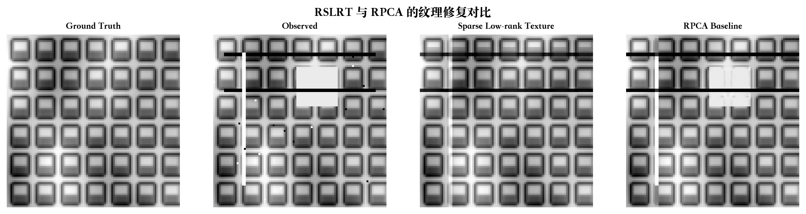
RSLRT vs. 标准 RPCA
代价是迭代次数从约 30 增到 840，但细节保留更好，对复杂结构图像有显著优势（增益 +2.65 dB）。
TILT — 变换不变低秩纹理
TILT 对包含仿射/投影变换的图像进行联合矫正：同时估计变换矩阵 τ 和低秩成分 L。
变换类型 矩阵误差↓ PSNR↑ SSIM↑
仿射（Affine） 0.00270 19.54 0.917 投影（Projective） 0.00615 19.74 0.921
彩色图像扩展
对彩色图像，将 R/G/B 三通道分别执行 RPCA，并在输出端合成为 RGB 结果。下方同时给出原图、退化观测、低秩恢复与完整流程图，展示灰度矩阵分解到三通道图像处理的可迁移性。
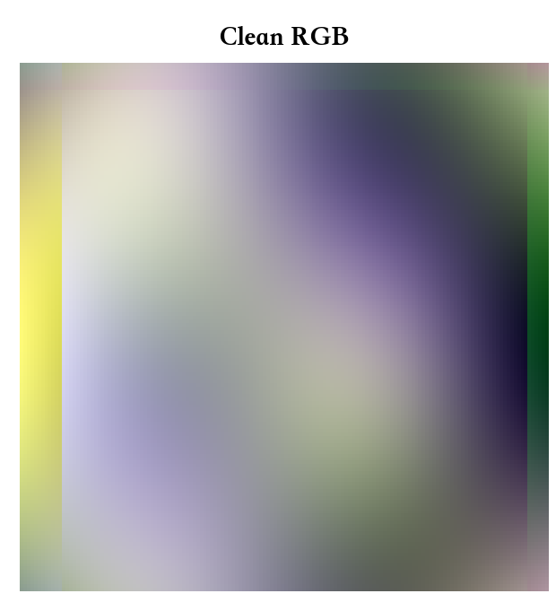
彩色图像扩展流程：RGB 三通道分别分解后合成为最终恢复结果。
RPCA 与 Poisson 图像融合可以组成连续处理链：RPCA 分离主体与异常，Poisson 方程将处理后的主体无缝融合到目标背景中 。前者负责“分离”，后者负责“融合”。
2.1 直接复制粘贴为什么失败？
把 RPCA 还原的干净区域直接复制粘贴到目标图上，边界会出现明显色块跳变。原因在于：直接复制约束的是像素值的绝对大小 ，而人眼真正感知的是变化的方式（梯度） 。
2.2 变分问题与 Poisson 方程
让融合结果 v 在区域 Ω 内的梯度尽可能接近源图 s 的梯度，同时在边界 ∂Ω 等于目标图 t 的值：
minv ∫Ω |∇v − ∇s|² dΩ， v|∂Ω = t|∂Ω
这与稳态热传导完全同构：已知"内部热源"（源图拉普拉斯）和"边界温度"（目标图边界值），求内部温度分布。
2.3 离散化与线性方程组
将图像离散化，每个内部像素 p 对应一个线性方程：
|N(p)| · vp − Σq∈N(p)∩Ω vq = Σq∈N(p) (sp −sq ) + Σq∈N(p)\Ω tq
2.4 混合梯度（Mixing Gradients）
Importing: gpq = sp − sq （完全使用源图梯度）pq = (sp −sq ) 若 |sp −sq | ≥ |tp −tq |，否则 (tp −tq )
Mixing 在每条边上取幅值更大的梯度。当目标背景有强纹理时，Mixing 保留背景纹理；当源图结构清晰时，Importing 更合适。选择取决于场景语义，而非单纯数值指标。
2.5 SOR 实时求解器
对大型稀疏方程组，使用逐次超松弛（SOR）迭代代替直接求解：
vp (k+1) = (1−ω)vp (k) + (ω/|N(p)|) · [Σq∈N(p)∩Ω vq + bp ]
松弛因子 ω 接缝误差↓ 收敛速度 备注
0.5 0.021 慢 欠松弛，收敛极慢 1.0（GS） 0.015 中等 Gauss-Seidel 基准 1.5 ✓ 0.009 快 最优超松弛，选用 1.9 — 不稳定 ω→2 时发散
工程优化：缓存遮罩拓扑结构，拖动时只更新右端向量 b；拖动中 20–30 次迭代（约 10ms），松手后 100–200 次细化，实现实时交互。
2.6 实验结果（Case 1–4：图像融合）
Case 像素数 变化像素% 求解时间 接缝(直接) 接缝(Importing) 接缝(Mixing) 降幅（最优）
Case 1 18,212 3.84% 59.2 ms
51.96 6.85 6.80
−86.9%
Case 2 15,081 2.60% 38.9 ms
68.18 15.22 16.51
−77.7%
Case 3 16,350 4.62% 41.8 ms
88.05 11.69 13.04
−86.7%
Case 4 20,376 4.31% 52.2 ms
39.92 7.60 9.56
−81.0%
四组测试，接缝跳变量降幅均在 77%–87% ，平均处理时间约 48ms。接缝度量 = 边界两侧像素均值之差（越小越无缝）。
2.7 融合效果与对比可视化
这一节只保留大结果图展示 直接复制 vs Poisson 融合 。读图时重点看物体边界：直接复制会出现色块跳变，Poisson 结果会把边界亮度和背景连续起来。
Case 1 接缝 51.96 → 6.85，降幅 86.9%
Case 2 接缝 68.18 → 15.22，降幅 77.7%
Case 3 接缝 88.05 → 11.69，降幅 86.7%
Case 4 接缝 39.92 → 7.60，降幅 81.0%
Case 1 · 接缝 51.96 → 6.85 （−86.9%）
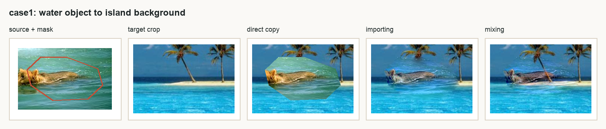
左半为直接复制，右半为 Poisson 融合。Case 1 的边界跳变从 51.96 降到 6.85。
Case 2 · 接缝 68.18 → 15.22 （−77.7%）
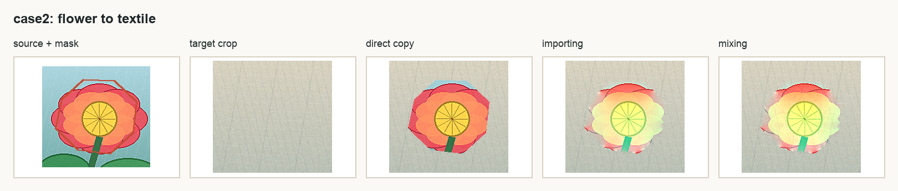
粉色花朵和织物背景色差较大，Poisson 仍将接缝降低 77.7%。
Case 3 · 接缝 88.05 → 11.69 （−86.7%）
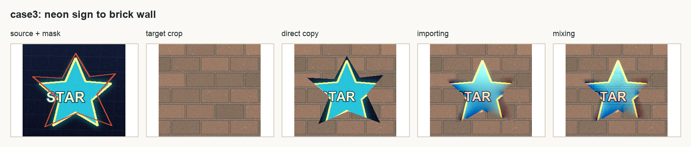
强边缘物体在砖墙纹理中保持结构，同时边界跳变降低 86.7%。
Case 4 · 接缝 39.92 → 7.60 （−81.0%）
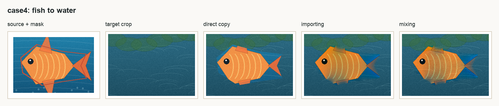
水面背景中 Poisson 结果的亮度过渡更自然，接缝降低 81.0%。
2.8 接缝误差柱状图
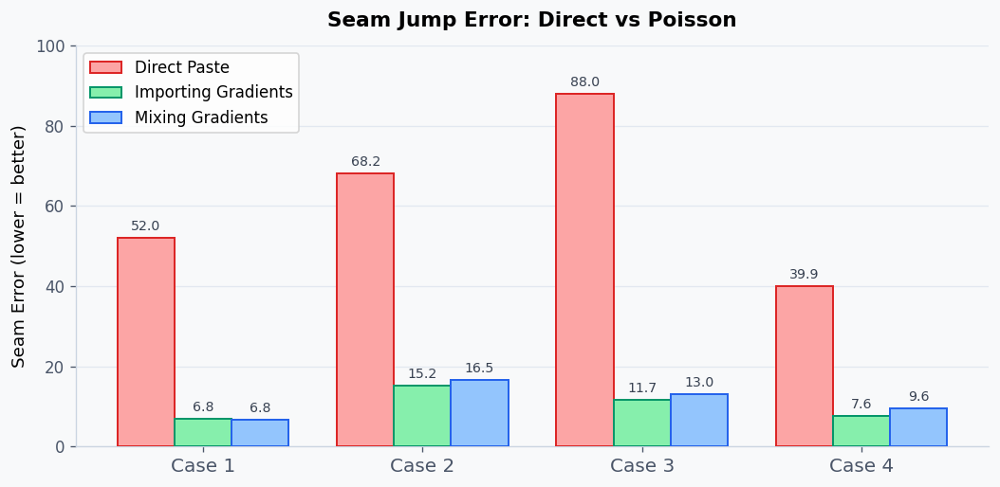
接缝跳变量对比：Poisson 方法在四组测试中均将接缝误差降低 77%–87%
2.9 图像修复（Inpainting）— Case 5
将源图区域置零，仅利用 Poisson 方程从边界向内插值，实现物体移除。22.1 ms 完成 9,890 像素修复（0.88%）。
修复前（左）vs 修复后（右）。Poisson 从边界插值补全区域，实现物体移除。
2.10 纹理展平（Texture Flattening）
将区域内幅值小于阈值（=28）的梯度置零，Poisson 重建后只保留强边缘，产生卡通化效果。27.2 ms 完成 15,260 像素处理。
原图（左）vs 纹理展平后（右）。弱梯度被压平，主结构轮廓保留。
2.11 人脸融合：Direct Blend 与 Poisson Blend 对比
人脸融合采用实时 demo 的最终流程：先用 face-api.js 检测人脸框和 68 个关键点，依据眉毛、眼睛、鼻子、嘴巴与下颌轮廓做三角剖分对齐，再进行颜色匹配和 Poisson 梯度域融合。
Step 1：检测人脸关键点并完成几何对齐
demo 先定位源脸与目标脸的关键点，包括眉毛、眼睛、鼻梁、嘴部和下颌轮廓；随后用三角剖分把源脸局部形状 warp 到目标脸区域。
Step 2：对齐与颜色匹配
对齐后的源脸先按目标脸局部颜色统计做肤色修正。这样进入 Poisson 方程前，五官位置、脸部尺度和整体肤色已经接近目标图。
Step 3：Poisson Blend（梯度域融合）
Poisson Blend 不直接复制绝对像素，而是在边界继承目标脸颜色、在内部保留源脸梯度，使融合区域更连续。
公开高清肖像样例：demo 实际流程截图
下图不是离线椭圆预设结果，而是直接从实时 demo 中运行“检测关键点 → warp 对齐 → 颜色匹配 → Poisson 融合”得到的三组截图。上半部分展示检测框和关键点，下半部分展示 Direct、Align+Color 与 Poisson 三步结果。
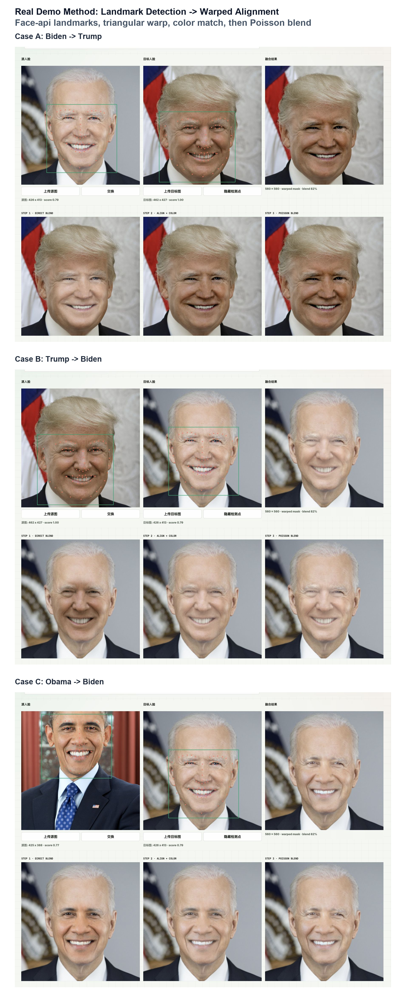
三组公开肖像的真实 demo 输出。结果状态为 warped mask，说明融合使用的是关键点对齐后的变形遮罩，而不是旧版椭圆预设。
公开图片来源：Wikimedia Commons 官方政府肖像，包括 Joe Biden、Donald Trump 与 Barack Obama 官方肖像。
计算病理学提供了这两类图像处理工具的典型应用场景：WSI 切片存在染色偏差、扫描伪影与 Patch 拼接接缝；nnMIL 框架进一步将处理后的 Patch 表征聚合到 Slide 级诊断，并支持多特征融合不确定性评估。
WSI 原始切片
全视野切片影像
H&E 染色偏差 · 接缝
→
→
步骤 2
Poisson 融合
Patch 接缝平滑
→
步骤 3
nnMIL 诊断
Patch→Slide 级诊断
3.1 为什么病理影像需要 RPCA？
染色偏差的数学性质
同一块组织，不同批次试剂、不同厂商扫描仪，H&E 染色的蓝紫比例可能差 30% 以上。染色偏差是低秩的 ——全局、缓慢变化的系统性误差，仅影响颜色分布，不影响局部结构。
A（原始病理切片）= L（染色背景结构）+ S（诊断性细节信息）
局部伪影自动检测
切片扫描中出现的气泡、组织折叠、刮痕等局部伪影 ，正是稀疏异常项 S——RPCA 可自动检测并剥离，无需人工标注。
文献支撑：动态 PET 成像中已有验证（Rigie & La Rivière 2015）——时间序列帧构成低秩矩阵，Poisson 计数噪声为稀疏项。
3.2 为什么病理影像需要 Poisson 融合？
WSI 的采集方式是分块扫描后拼接 ——高倍率下分块拍摄，再将所有 Patch 拼合成整张切片。相邻 Patch 的边界往往存在亮度/颜色跳变。
对后续机器学习模型（如 nnMIL），这些人工接缝是有害噪声：模型可能把"接缝线"当作真实的组织边界 来学习，产生虚假的诊断依据。Poisson 方程平滑相邻 Patch 边界，消除亮度跳变，保持梯度连续性。
Mixing Gradients 在这里有特殊价值 ：当相邻 Patch 边界两侧都有真实组织纹理时，Mixing 模式优先保留幅值更大的梯度，确保组织结构连续性，而非简单地让一侧覆盖另一侧。
3.3 前序工作：多实例学习的演进史
要理解 nnMIL 的贡献，必须先了解计算病理学中 MIL 的挑战与已有的努力。
为什么病理学用 MIL？
一张病理全视野切片（WSI）在 40× 放大下分辨率高达 100,000×100,000 像素，无法直接送入神经网络。标准做法是切成 256×256 的 Patch 集合 （一张切片可达数万个），再用 MIL 聚合成切片级预测。核心难点：只有切片级标签（阳性/阴性），没有 Patch 级标注 ——哪些 Patch 是肿瘤，医生并未逐一标记。
2018 — ABMIL（Attention-based MIL）
Ilse 等人（ICML 2018）提出用注意力机制对 Patch 加权聚合 ，每个 Patch 被赋予一个注意力分数，高分 Patch 贡献更多到最终预测。这是第一个端到端可学习的 MIL 聚合器，奠定了后续所有方法的基础。
核心公式：z = Σ aₖhₖ，aₖ = softmax(W tanh(Vhₖ))
2021 — CLAM（Clustering-constrained Attention MIL）
Lu 等人（Nature Biomed. Eng. 2021）在 ABMIL 基础上增加实例级聚类约束 ：正类切片中的高注意力 Patch 应聚为一类，负类切片中的高注意力 Patch 聚为另一类。引入辅助损失稳定训练，并在多个癌症亚型任务上验证。
2021 — DSMIL（Dual-stream MIL）
Li 等人（CVPR 2021）提出双流架构 ：一路用最大池化抽取最显著 Patch 的局部信息，另一路用注意力加权聚合全局信息，两路融合后分类。同时引入自监督特征预训练提升泛化性。
2021 — TransMIL（Transformer MIL）
Shao 等人（NeurIPS 2021）将 Transformer 引入 MIL，用位置编码+自注意力 对 Patch 集合建模，捕获 Patch 间的空间关联和长程依赖。但计算复杂度随 Patch 数量二次增长，在超大 WSI 上内存压力大。
2022 — HIPT（Hierarchical Image Pyramid Transformer）
Chen 等人（CVPR 2022）提出层级 Patch 编码 ：256×256 Patch → 4096×4096 区域 → Slide 级三层聚合，每层用 Transformer 处理。配合自监督预训练，在 TCGA 多个任务上超越前代方法。
2023–2024 — 病理基础模型时代
大规模预训练席卷病理学：CONCH （CLIP for pathology，UNC）、UNI （10M 图像，哈佛）、GigaPath （1.3B patch，微软+Providence）、Virchow2 （8400 万张 WSI 训练，Paige+MSK）。这些模型将特征提取质量推向新高度，但 MIL 聚合层如何统一使用多个基础模型仍是开放问题。
MIL 的痛点与 nnMIL 的动机
以上方法存在三个共同问题：① 训练接口不统一 ：不同 Bag 大小差异极大（数百到数万 Patch），无法高效批量训练；② 易过拟合 ：注意力机制容易过度依赖少数"代表性" Patch，正则化手段有限；③ 推理没有不确定性 ：模型只给出预测标签，无法告诉临床医生这个预测有多可信。nnMIL 正是为解决这三点而设计的。
3.4 nnMIL 论文详解（arXiv:2511.14907, 2025）
A Generalizable Multiple Instance Learning Framework for Computational Pathology ——该文提出一个统一框架，核心思想是"无需改变模型架构，仅通过训练接口和推理策略的改变，实现泛化性和不确定性估计" 。
第一柱：标准化训练接口（Standardized Training Interface）
WSI 中 Patch 数量因疾病、切片大小和放大倍率而大幅变化。nnMIL 将变长 Bag 统一处理：
随机 Chunking ：把每个 Bag（数万 Patch）随机分成固定大小的 Chunk（如每 Chunk 512 个 Patch）Chunk-level Pooling ：对每个 Chunk 用注意力聚合得到 Chunk 嵌入，再聚合所有 Chunk 嵌入做切片级预测效果：批量训练 GPU 利用率从 <40% 提升到 >85%；支持任意大小 WSI
hchunk = Attn-Pool({p₁,...,p_C})， ŷ = Classifier(Attn-Pool({hchunk,1 ,...,hchunk,K }))
第二柱：随机子空间注意力（Random Subspace Attention）
训练时，每次前向传播随机采样特征维度的一个子空间 （如从 768 维随机取 384 维）进行注意力计算：
不同子空间捕获不同形态学特征（纹理、颜色、结构）
强迫模型学习"从任意视角都能判断"，类似 Dropout 的隐式正则化
防止过度依赖少数高注意力 Patch，提升对域偏移的鲁棒性
训练时： a = Attn(h[R̃])， R̃ ⊆ {1,...,d} 随机采样
第三柱：子空间集成推理（Subspace-Ensemble Inference）
推理时，将特征维度均匀分割 为 M 个不重叠子空间，对每个子空间独立预测，最后平均 M 个预测：
无需额外训练，直接由训练时随机化带来的多样性获得集成效果
预测方差 = 自然的不确定性指标 ：若所有子空间一致 → 高置信；若分歧大 → 低置信
在基准测试中 AUC 和不确定性校准均优于单一预测
ŷfinal = (1/M) Σm=1 M f(h[R_m])， uncertainty = Var({f(h[R_m])})
模块 解决什么问题 技术手段 收益
标准化训练接口 Bag 大小不一致 随机 Chunking + 两级聚合 GPU 利用率↑，支持大 WSI 随机子空间注意力 过拟合 / 域偏移 训练时随机采样特征子空间 正则化，多视角鲁棒 子空间集成推理 无不确定性估计 推理时并行 M 个子空间预测取均值 方差=置信度，无额外训练开销
3.5 多特征融合：多特征融合不确定性评估
在 nnMIL 框架之上，进一步评估多病理基础模型（Multi-extractor）融合是否能比任意单一模型给出更可靠的预测置信度。
方法设计：两路并行置信度链路
方法使用 5 个病理基础模型（特征提取器），对每张 WSI 独立推理，再融合预测置信度：
五个特征提取器
conch_v1_5 : CLIP-pathology 对比学习，UNC
gigapath : 13亿+ patch 预训练，微软/Providence
h0 : 开源病理基础模型
uni : 1000万图像训练，哈佛医学院
virchow2 : 8400万 WSI，Paige/MSK
融合置信度 = 两路平均
链路 A：MC Dropout Voting
T 次 Dropout 前向中，多个 extractor 对类别投票：
链路 B：Enhanced JS Mutual Information
把所有 extractor 的 Chunk 概率拼接为 N×K 矩阵，用 JS 散度等变体量化 Chunk 间与 Extractor 间分歧
Conffinal = 0.5 × Confvoting + 0.5 × ConfMI
评估框架：15 项指标，4 大类别
类别 指标 方向 含义
校准（Calibration） ECE ↓ 期望校准误差 MCE ↓ 最大校准误差 ACE ↓ 自适应校准误差 SCE ↓ 静态校准误差 ICI ↓ 校准指数 Brier ↓ Brier 分数 NLL ↓ 负对数似然 CSR →1 置信度-成功率比 错误检测（Misclassification Det.） AUROC ↑ 检测错误样本 ROC AUPR ↑ 精确率-召回率曲线 FPR95 ↓ TPR=95% 时的 FPR 选择性预测（Selective Prediction） AURC ↓ 风险覆盖率曲线下面积 E_AURC ↓ 超额 AURC cwA ↑ 置信度加权准确率 总体性能 Overall_Accuracy ↑ 总体分类准确率
该方法主要优化置信度排序与校准；错误检测和选择性预测指标是主要评价证据。
实验规模：12 个 TCGA 癌症任务
为避免图片中字体缺失或标签过小影响阅读，下方先用文字列出全部任务名称、样本数与证据级别；图片用于展示整体趋势和颜色编码。
EBRAINS IDH
Task059 BRCA IDC vs ILC
Task060 BRCA PAM50 3类 noHer2
Task061 BRCA PAM50 4类
Task062 KIDNEY 3亚型
Task063 SARC 6类组织学
Task064 STAD Lauren 3类
Task065 THCA 3类组织学
Task066 UCEC Endometrioid vs Serous
Task068 PRAD Gleason 二分类
Task070 HNSC HPV 状态
Task071 BLCA Papillary vs NonPapillary
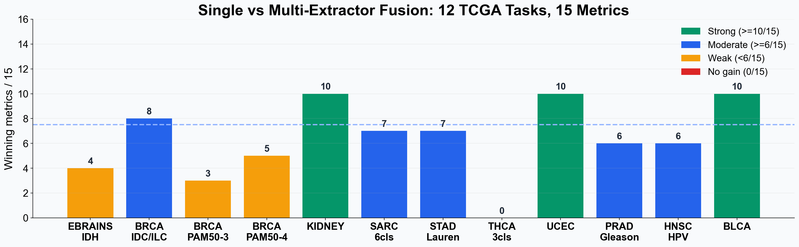
12 个任务总览。强证据任务集中在 KIDNEY、UCEC、BLCA 与 BRCA IDC/ILC，THCA 作为负例保留在分析中。
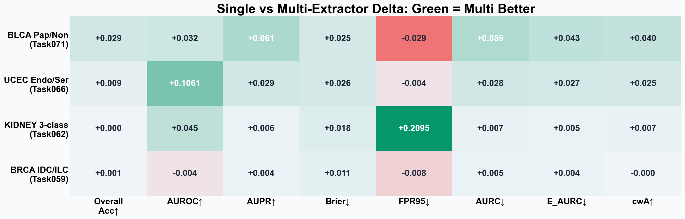
4 个强证据任务的 Multi vs Best-Single 指标差值热力图。绿色表示融合方法更优，红色表示最佳单 extractor 更优。
强证据任务一：KIDNEY 3 亚型（10/15 指标胜出）
920 例 WSI，3 亚型（ccRCC/pRCC/chRCC）。Multi 在 10/15 指标胜出：AUROC 0.8010→0.8458 ，FPR95 0.6303→0.4208 ，AURC 0.0229→0.0158 ，SCE/Brier 均改善。这是最稳定的强证据 ——既保住准确率，又显著改善错误检测。
Mode-0 最佳子集 ：conch_v1_5 + h0 + uni（仅3个 extractor）→ 15/15 指标全赢！
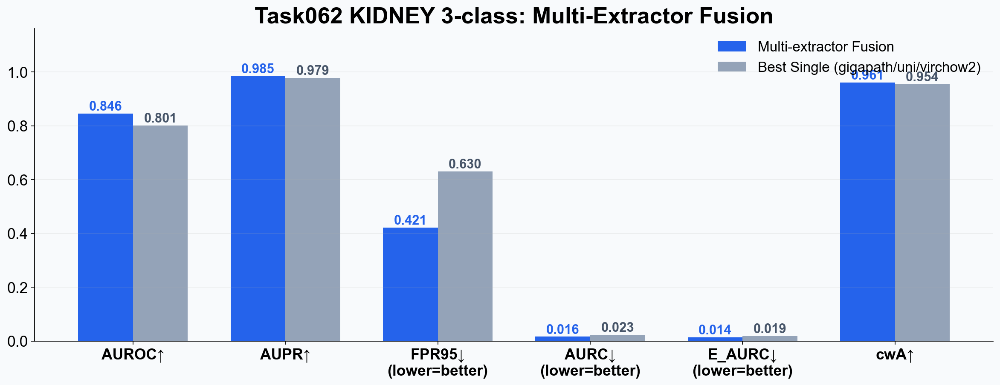
KIDNEY 3亚型 · Multi vs Best-Single 对比
强证据任务二：UCEC Endometrioid vs Serous（10/15 指标胜出）
572 例，子宫内膜癌二分类。融合 AUROC 0.6913→0.7975 （+10.6%），AUPR 0.9421→0.9713 ，准确率 0.8869→0.8962。ECE 短板说明置信度排序远优于绝对概率校准，可用 Temperature Scaling 后处理。
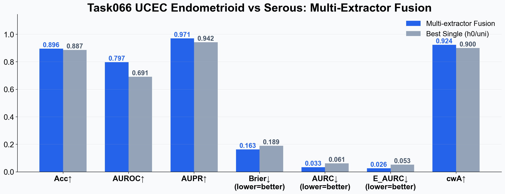
UCEC Endometrioid vs Serous · Multi vs Best-Single
强证据任务三：BLCA Papillary vs NonPapillary（10/15 指标胜出）
452 例膀胱癌二分类。准确率 0.7219→0.7505 ，AUPR 0.7428→0.8040 ，AURC 0.2621→0.2026 ，cwA 0.7230→0.7633。这个任务说明融合不仅改善置信度排序，还直接带来分类收益 。
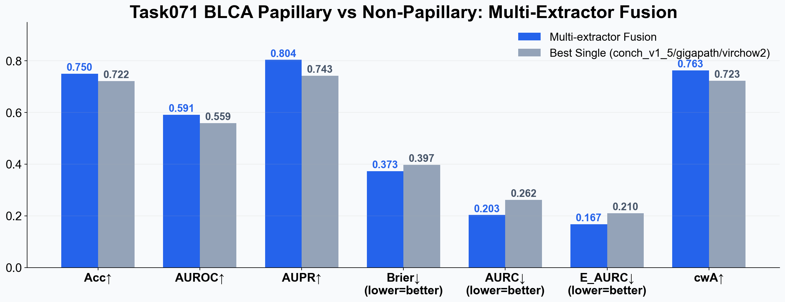
BLCA Papillary vs NonPapillary · Multi vs Best-Single
强证据任务四：BRCA IDC vs ILC（8/15 指标胜出）
1043 例乳腺癌组织学分型。高准确率场景下的证据 ：单特征模型已很强（0.9239），融合仍能改善 AUPR、SCE、Brier、AURC、E_AURC。说明即使在接近天花板的任务上，多路融合仍有价值。
Mode-0 最佳子集 ：gigapath + h0 + uni（3个）→ 12/15 ，优于全 5 extractor！
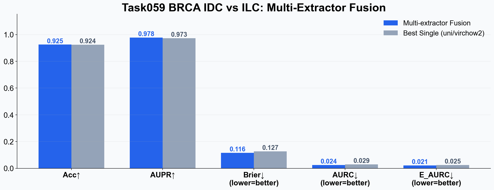
BRCA IDC vs ILC · Multi vs Best-Single
关键发现：子集往往优于全集（Mode-0 枚举分析）
对每个任务枚举所有 3–4 个 extractor 的子集（共 C(5,3)+C(5,4)=15 种），统计胜出指标数。结果显示：最优子集（3–4 个 extractor）经常超过全 5 extractor 。
以 KIDNEY 为例，conch_v1_5 + h0 + uni 达到 15/15 全胜，而全 5 extractor 只有 10/15。这说明不同 extractor 之间存在噪声叠加效应 ——有些组合的分歧本身就是噪声，而非有效的多样性信号。选择合适子集是未来工作的重要方向。
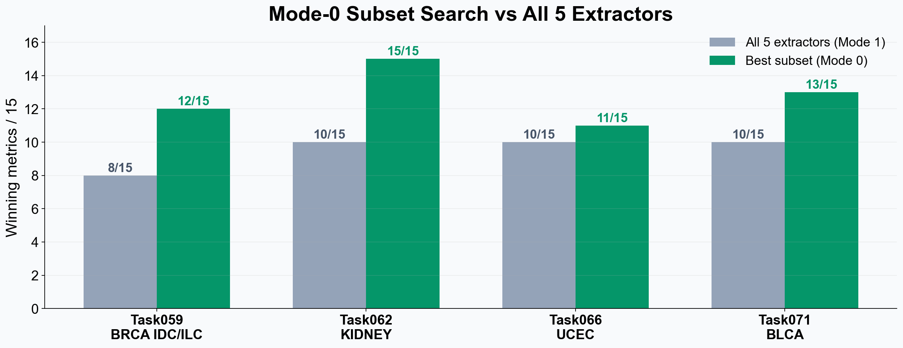
Mode-0 最优子集 vs 全 5 Extractor 胜出指标数对比
3.6 三者的数学统一性
三种方法共享"最小化一个能量函数"的数学语言，只是先验和尺度不同：
方法 优化目标 先验假设 作用尺度 数学工具
RPCA min ‖L‖* + λ‖S‖1
低秩 + 稀疏
像素级（全图）
凸优化 + ALM
Poisson 融合 min ∫|∇v−∇s|²
梯度平滑
像素级（局部）
变分法 + PDE + SOR
nnMIL 注意力 min Lcls + 随机子空间正则
判别性稀疏
Patch/Slide 级
随机化 + 集成推理
多特征融合 min MI(extractors) + calibration loss
预测多样性
Extractor 级
JS 散度 + MC Dropout
3.7 结语：齿轮咬合
本项目形成一条从低层图像恢复到高层医学预测的完整技术链：
图像被噪声污染RPCA 分离信号与异常（低秩 + 稀疏）Poisson 方程 保持梯度连续（变分最优化）nnMIL 随机子空间注意力 + 集成推理（从 MIL 到置信度）多特征融合 MC Dropout voting + JS MI（多 extractor 不确定性）
RPCA 的低秩假设、Poisson 的梯度连续性、nnMIL 的随机化正则与信息论置信度共同服务于同一目标：在医疗影像中提高诊断可靠性，并给出可解释的不确定性证据。
参考文献
Candès, E. J., Li, X., Ma, Y., & Wright, J. (2011). Robust principal component analysis? Journal of the ACM , 58(3), 1–37.
Pérez, P., Gangnet, M., & Blake, A. (2003). Poisson image editing. ACM SIGGRAPH , 22(3), 313–318.
Lin, Z., Chen, M., & Ma, Y. (2010). The augmented Lagrange multiplier method for exact recovery of corrupted low-rank matrices. UIUC Technical Report .
Ilse, M., Tomczak, J., & Welling, M. (2018). Attention-based deep multiple instance learning. ICML .
Lu, M. Y., et al. (2021). Data-efficient and weakly supervised computational pathology on whole-slide images. Nature Biomedical Engineering .
Li, B., et al. (2021). Dual-stream multiple instance learning network for whole slide image classification with self-supervised contrastive learning. CVPR .
Shao, Z., et al. (2021). TransMIL: Transformer based correlated multiple instance learning for whole slide image classification. NeurIPS .
Chen, R. J., et al. (2022). Scaling vision transformers to gigapixel images via hierarchical self-supervised learning. CVPR .
nnMIL: A Generalizable Multiple Instance Learning Framework for Computational Pathology. arXiv:2511.14907 , 2025.
Rigie, D. S., & La Rivière, P. J. (2015). Joint reconstruction of multi-channel, spectral CT data. Physics in Medicine and Biology .
多媒体期末展示 · 王雨乾 PB23061103 · USTC 多媒体技术 2026
本地运行：python -m http.server 8000，然后访问 http://localhost:8000